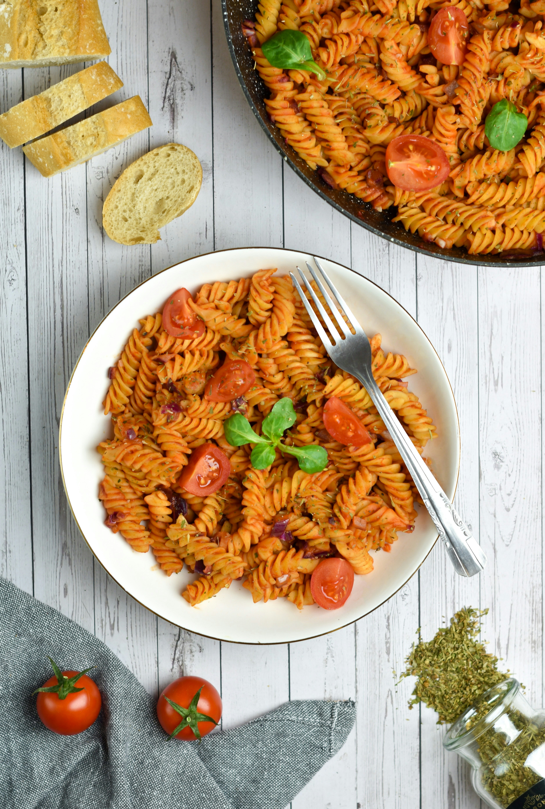

Tomato Pasta

Description
A very easy vegetarian meal in a bowl. The combination of garbanzo beans (chick peas) with pasta creates the complex proteins a vegetarian needs. Very palatable for the garlic and tomato lover.
Ingredients
- 400 grams pasta (penne or spaghetti)
- 3 tomatoes, chopped (or canned crushed)
- 3 garlic cloves, minced
- 1 onion, finely chopped
- 3 tablespoons olive oil
- 1 teaspoons dried oregano
- 0.5 teaspoons chili flakes
- 1 teaspoons salt
- 0.3 cups fresh basil leaves
- 0.5 cups parmesan, grated
Steps
- Boil the pasta: Bring a large pot of salted water to a boil and cook 400 grams pasta (penne or spaghetti) until al dente.
- Sauté the onion: While pasta cooks, heat 3 tablespoons olive oil in a pan and sauté 1 onion, finely chopped until soft and translucent.
- Add garlic and tomatoes: Add 3 garlic cloves, minced and cook for 30 seconds until fragrant, then stir in 3 tomatoes, chopped (or canned crushed), 1 teaspoons dried oregano, 0.5 teaspoons chili flakes, and 1 teaspoons salt.
- Simmer the sauce: Simmer the sauce until it thickens slightly.
- Combine pasta and sauce: Drain the pasta and toss it into the sauce, adding a splash of reserved pasta water to loosen if needed.
- Garnish and serve: Top with 0.3 cups fresh basil leaves and 0.5 cups parmesan, grated before serving.
- Rest and serve: Turn off the heat and let the biryani rest for 5 minutes before gently mixing and serving.
Home